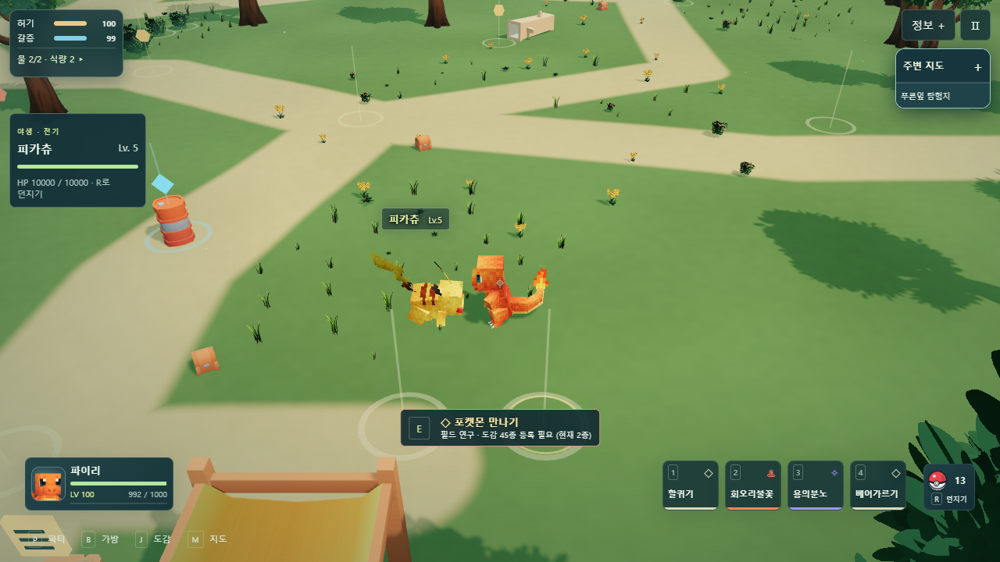
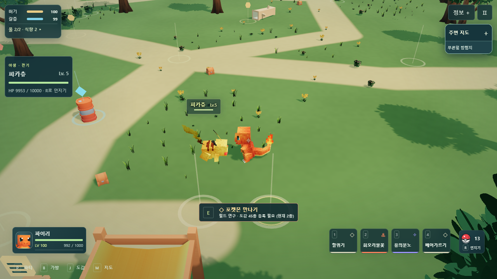
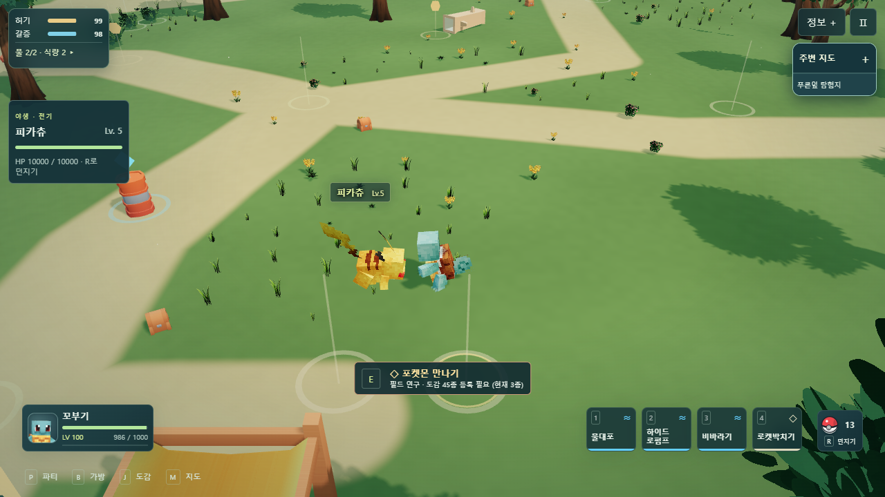
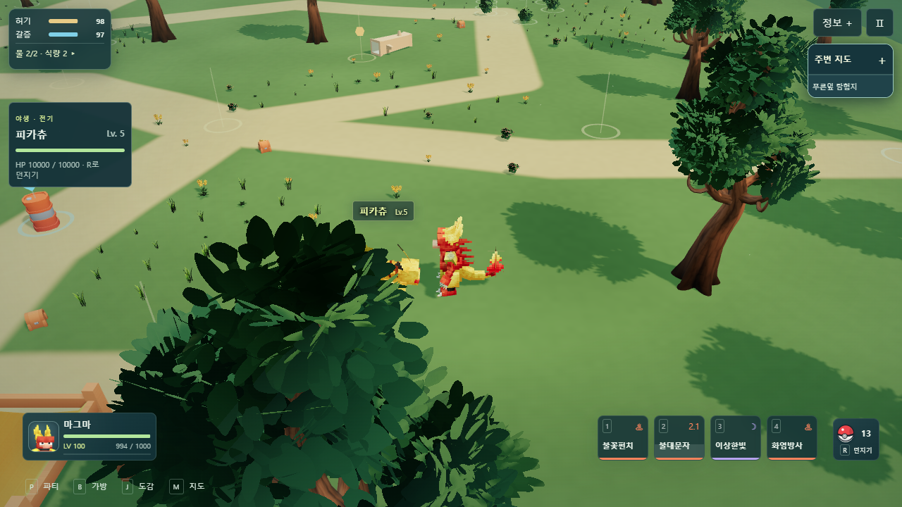
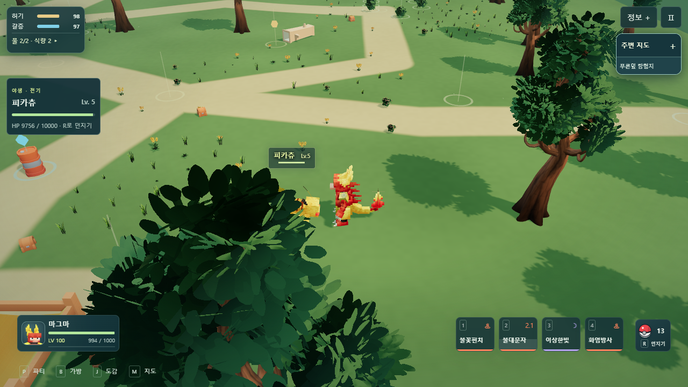
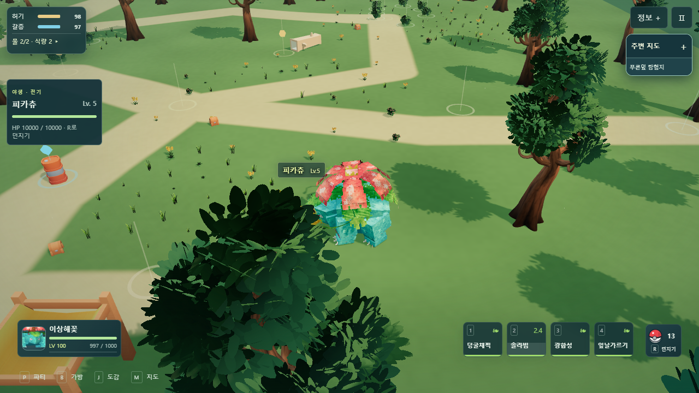
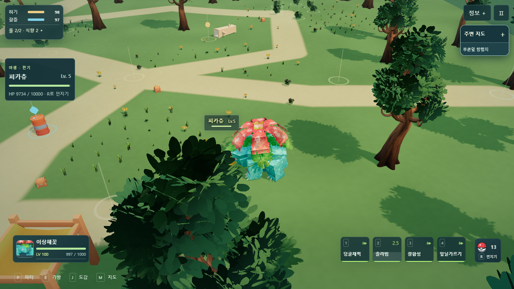

선공 기술이 취소되던 오류 수정
실제 배운 기술과 일반 입력을 사용한 비교입니다. 반복 검수를 위해 체력과 대기 상태를 준비했으며 실제 게임의 체력 설정은 바꾸지 않았습니다.

수정 전 · 할퀴기 취소 또는 판정 누락
수정 후 · 선공 피해 뒤 정상 반격
수정 전 · 물대포 취소 또는 판정 누락수정 후 · 선공 피해 뒤 정상 반격
수정 전 · 불대문자 취소 또는 판정 누락
수정 후 · 선공 피해 뒤 정상 반격
수정 전 · 솔라빔 취소 또는 판정 누락
수정 후 · 선공 피해 뒤 정상 반격변경과 검사 결과·제한 · 실제 검수 기록